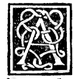

CAPITEL IV¶
Von den Dingen, welche der Leser zum Verständniss dieses Werkes zu beobachten habe.

Nachdem ist zu weniger Ungelegenheit im Folgenden zu bemerken,, dass, wenn mitunter citirt werden wird: die erste des ersten, die vierte des zweiten, die zehnte des fünften, die zwanzigste des sechsten und so fortlaufend bis zum fünfzehnten, man unter der ersten Zahl stets die Zahl der Schlussfolgerungen zu verstehen habe. Und unter der zweiten Zahlenangabe die Anzahl der Bücher unseres Philosophen Euklid, dem wir überhaupt als Archimandriten dieser Fächer nachahmen. Nämlich, wenn man sagt: nach der fünften des ersten, so will das sagen: „nach der fünften Schlussfolgerung seines ersten Buches” und ebenso bezüglich der anderen einzelnen Bücher seines gesammten Werkes über die Elemente und ersten Principien der Arithmetik und Geometrie.
Wenn jedoch die von uns angeführte Autorität einem anderen seiner Werke, oder einem anderen Schriftsteller zugehört, so werden wir jenes, oder jenen namhaft machen. Ferner bezüglich vieler verschiedener Charaktere und Abkürzungen, die in ähnlichen Fächern gebraucht zu werden pflegen. So braucht die Medicln die ihrigen für Scrupel, Unze, Drachme und Gran, die Silberarbeiter und Juweliere für Gran, Denar und Karat, die Astrologen ihre für Jupiter, Mercur, Saturn, Sonne, Mond, und die Anderen ebenso die ihrigen, und die Kaufleute für Lire, Soldi, Groschen und Pfennige ebenso verschiedene der Abkürzung wegen, und dies allein um die Weitschweifigkeit des Schreibens wie auch des Lesens zu vermeiden, weil sie bei anderem Verfahren viel Papier mit Tinte anfüllen würden.
In ähnlicher Art gebrauchen auch wir in der Mathematik bezüglich der Algebra nämlich in der praktisch-speculativen andere, welche bezeichnen: Ding, Census und Kubus, und die übrigen Ausdrücke wie sie in unserem vorgenannten Werke enthalten sind. Von ihrer Zahl werden wir auch in diesem Tractat einige benützen, und zwar sind es die, welche wir in der Tabelle vorher zusammengestellt haben. In ähnlicher Art bedeuten die folgenden Namen: Multiplication, rechtwinkliges Produci, eine und dieselbe Sache. Und ebenso sind diese: nämlich Quadrat einer Grösse und Potenz einer Grösse ein und dasselbe, denn die Potenz der Linie bezieht sich auf ihr Quadrat nach der letzten des ersten. Und weiter, was „die Linie kann”, ist ihr Quadrat.
Und die=;e Dinge müssen mitunter in unserem Fortgang beobachtet werden, um sich im Sinne der Worte nicht zu irren.